As well as simple editing operations (such as creating a new record, or changing an existing one), there are many useful things that can be done with lists.
For certain files it is possible to add up particular fields in the highlighted records and display the total on the screen. This is done using the Sum Selection command.
Choose Select>Sum Selection or press Ctrl-=/⌘-=
The highlighted records are summed and the result is displayed.
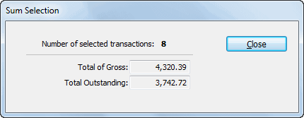
Tip: On the Mac, if you hold down the option key, the Close button will change to Keep, enabling you to keep this sum around and do another.
You can colour individual or groups of records in the transactions, names, products, jobs and job sheet items files.
To colour records:
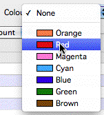
Select the colour for the records from the Set Colour submenu in the Commands menuAll the highlighted records will be changed to the specified colour.
You can also set a record’s colour as you enter or modify it by setting the colour pop-up menu on the entry screen.
Note: Individual tables in MoneyWorks can have their own
These represent the subject of the enquiry (for example, the product records in “who has purchased this product”).
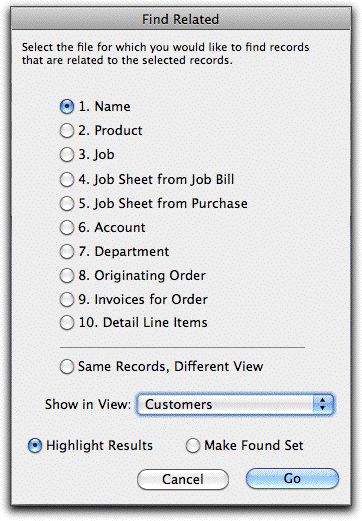
The Find Related settings window will open (its exact format layout on where you are relating from):colour labels. These are set on the Fields tab of the Document Preferences.
use the Colour pop- up menu to set the colour
The Find Related command allows to locate records in other lists that are related in some way to the currently highlighted records. It is a very powerful way of finding out information such as:
Who has purchased these products?
Who hasn’t purchased these products?
What products have been purchased by these customers?
What other products have been purchased by customers who purchased these products?
What transactions were used to pay these invoices?
The general way to operate the command is as follows (as this probably won’t make a lot of sense first time around, look at the examples below):
This is used to specify the related list which you want to show, and its exact format depends on the current source list.
If the related list is tabbed, choose the tab view to show from the tab view pop-up menu.
Highlight Results: All the records in the related list will be shown, but those that are related to your query will be highlighted.
Make Found Set: Only those records that are related to your query will be shown. They will not be highlighted.
Click Go
The related list will be displayed, with the related records shown or highlighted.
To identify who has purchased the products we first highlight the Items of interest in the Items list and then use the Find Related command, as shown stepwise below:
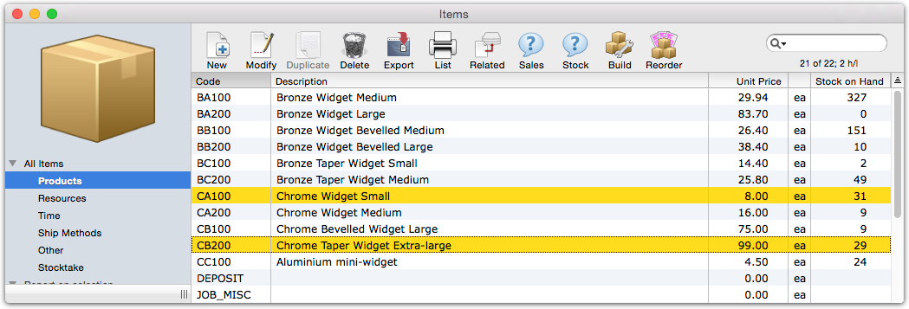
Highlight the records and click the Related toolbar icon
The Find Related window will open
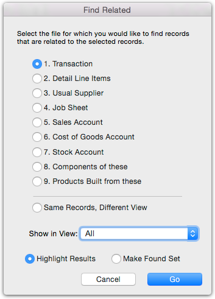
Set Show in View to "All" and set Highlight Results
The Transaction List window will open with all transactions involving the selected products highlighted.
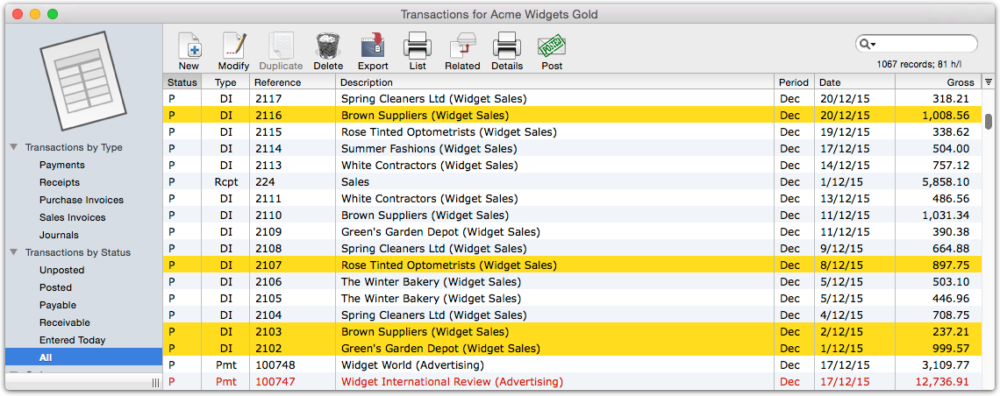
Click Related in the Transaction list window
The Find Related window will open again
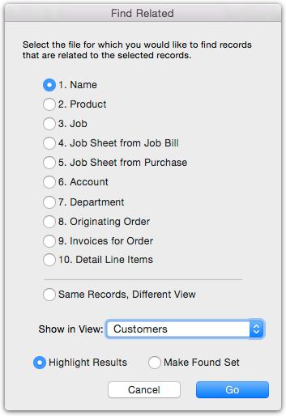
Set Show in View to "Customers"
Set the Show in View popup to customers and click Go
The Names window will open on the Customers tab, with all customers who purchased the selected products highlighted.
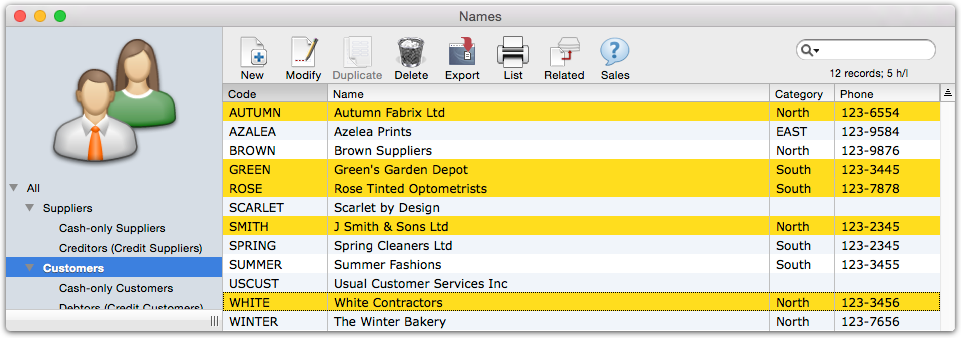
Choose Select>Invert Selection
The highlighting inverts, so that those customers who have not purchased the products are highlighted.
Click the Related button, set to Highlighted Results, and go to the Sales Invoices tab of the Transactions file
All invoices involving those customers will be highlighted in the Transactions list
The products that have been purchased by the customers are highlighted.
Choose Select>Invert Selection
The highlighting inverts, so that those products not purchased by the customers are highlighted.
Tip: Similar results can be achieved by using a relational search in a Find by Formula
The replace commands will replace a nominated field in a selection of highlighted records by a constant value or the result of a calculation. This allows easy update of (for example) customer terms or a uniform price increase.
Note: Use this command with caution—it is a good way to zap your entire file.
We recommend that you save your file before using this command, then check the results carefully, and if necessary use the Revert/Rollback command —see Document Rollback or Revert to restore your file to how it was before the replace.
To replace a field
Choose Select>Replace
The Replace Settings window will be displayed.
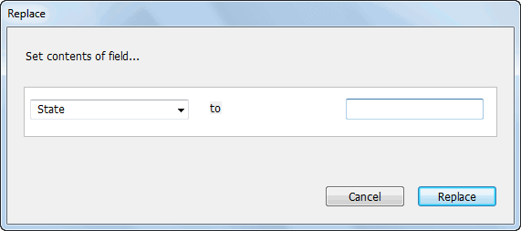
Enter the replacement value into the to field
Click Replace
The selected field in each of the highlighted records in the list will be changed by the replacement value.
There are (obviously) restrictions on the fields that can be replaced and the values that can be entered. For example you cannot change the Gross field in a transaction (it must be the sum of the detail lines) or the dates in posted transactions. And it makes no sense to replace every item code with a single value.
In Gold only, use the Advanced Replace to update fields with a calculated result. This is useful for operations like applying a price change to a range of products.
Choose Select>Advanced Replace...
The Advanced Replace settings window will be displayed
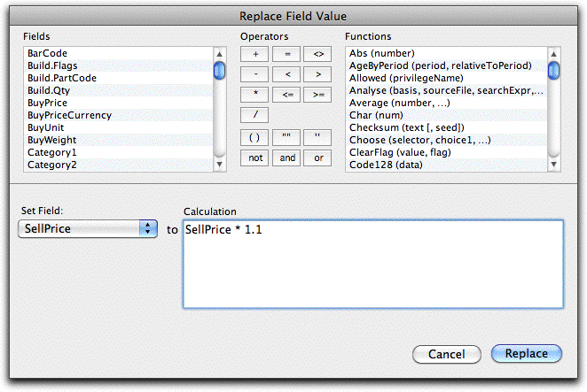
Enter the calculation to use in the Calculation field
You can use the fields and functions in the lists if needed.
The selected field in the each of the highlighted records in the list will be permanently changed by the replacement value. It is a good idea to test the calculation by replacing an unused field (such as “User1”) with the results, and then if all has gone well, replace the real destination field by the contents of this field.
File Field Calculation Description
| Names |
|
|
|
|---|---|---|---|
| Names |
|
|
Clear the AccountName field |
| Product |
|
|
|
| Product |
|
|
|
| Transactions |
|
|
|
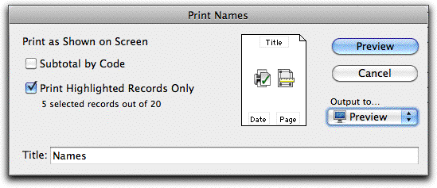
Printing RecordsIt is possible to print out any of the lists that are displayed, just
as they appear on the screen. They will print in the same order in which they appear on the screen, with the same columns8. To print a list:
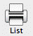
To print a list, click the Print List toolbar icon.
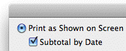
This option is only available if the list has been sorted by one of the columns. A subtotal of each numeric field in the list is printed whenever the value in the sorted column changes, with a grand total at the end of the list.
If necessary, find the records you want to print and sort the list
If you only wish to print specific records in the list, highlight those records
Click the Print List toolbar button, or choose File>Print or press Ctrl-P/⌘-P
Note: Only columns with decimal alignment will be totalled
Set the Subtotal
option to get subtotals on your print
The Print Configuration dialog box for the list appears. There may be list- specific options on this. Refer to the sections on the specific files for a discussion of the options.
Set the Output to pop-up to Preview or Print
You can also save it to disk, email it, open it in Excel etc.— see Output Settings
Click Print or Preview to print (or preview) the list
If Print is clicked, the standard Print Job dialog box is displayed.
Additional reports that can be run on the records in the list are available in the Reports section of the lIst sidebar.
You can copy and paste records in a list, providing an easy method of duplicating a group of records, moving data to another application (or another MoneyWorks document), or receiving data from elsewhere. Whenever you paste, MoneyWorks invokes its Import routines to ensure that the data is verified.
The Import Settings window for the list will be displayed9, enabling you to match up the information being pasting with the fields in MoneyWorks
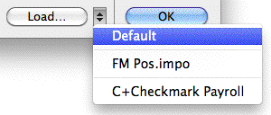
—see Importing into Other Files.Note: If you are pasting records copied out of MoneyWorks, choose the Default import settings to align the fields up automatically.
Choose Edit>Copy or press Ctrl-C/⌘-C
Note: The information for payments and receipts against invoices is different from other payments10. You will not be able to successfully paste in a mix of these records.
Choose the Default map if you are pasting information copied from MoneyWorks.
The highlighted records will be copied to the clipboard.
Note that the information is copied in the same format as the export format for the list, and is not influenced by whatever columns are displayed in the list. The field names constitute the first record in the copied information.
It doesn’t matter if you highlight other types of transactions—only payments and receipts against invoices will be copied.
The highlighted payments and/or receipts against invoices will be copied in a format suitable for reimporting into MoneyWorks. You can’t paste these back into MoneyWorks—paste them into a text document instead and import this using the Import>Payments on Invoices command.
You can have your computer read out the contents of most MoneyWorks lists for you. This is useful for checking input and numbers against the original source documents.
To read out records from a list:
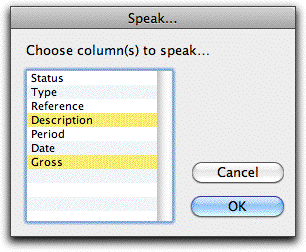
The Speak settings window will be displayed.This is used to specify which fields you want to have read.
The Speak command is not available if the speech software is not installed/ enabled on your computer.
The information in each selected field in each of the highlighted records will be read out to you.
To pause: Choose Select>Pause Speech or press ⌘-` (Mac only)
To stop the speech: Choose Select>Stop Speaking or press esc/⌘-.
To repeat the speech: Choose Select>Speak Again or press Ctrl-,/⌘-,